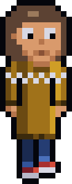
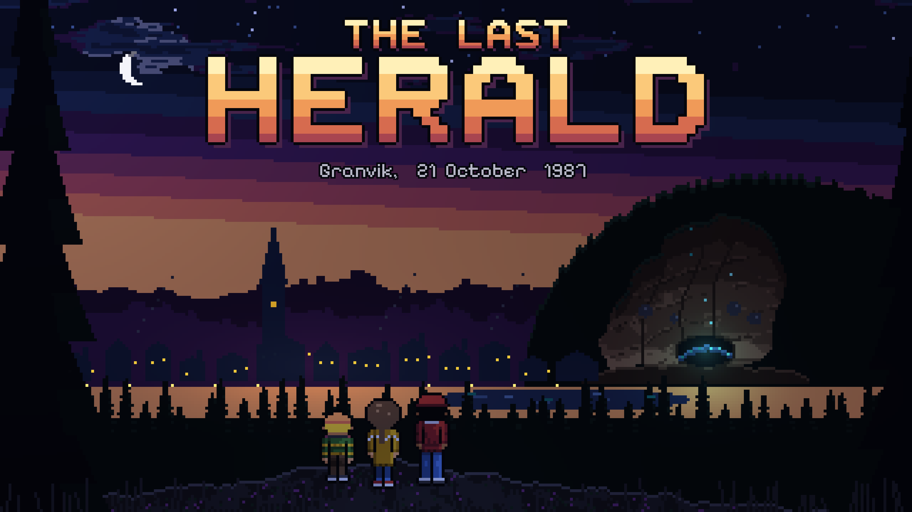
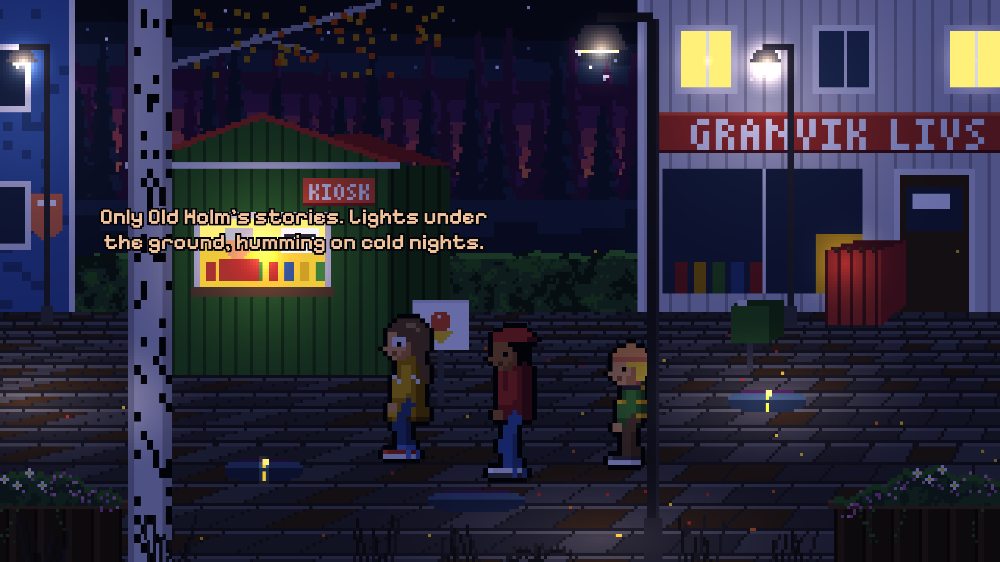
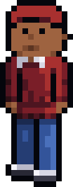
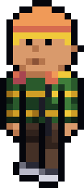

Sofia
13
Star charts, a notebook, and a compass that hasn't pointed north since the storm. She has a plan. She always has a plan.

1987: three kids from a Swedish sawmill town find a starship under a hill.
FreeNo adsNothing to buyPlays offlineFor ages 9 and up
October 1987. Granvik is a sawmill town in the north of Sweden, with spruce forest to the horizon, and it's dark by five. Pappa is away on an oil platform. And Old Holm, out past the logging road, says the Singing Hill hums on cold nights.
Sofia, thirteen, has her star charts and her notebook. Her little brother Benjamin, nine, has his Walkman and Dr. Chet Winslow's self-help tape. Danny, from Tallbacken, says what he thinks. They have to be home by six.
Under the hill, they find a starship. It came down forty thousand years ago with a warning that was never delivered, and it hasn't given up.


Star charts, a notebook, and a compass that hasn't pointed north since the storm. She has a plan. She always has a plan.

From Tallbacken. Loud, brave, funny, and rarely right on the first try. Not scared of the dark. Mostly.

Sofia's little brother. His Walkman, and Dr. Chet Winslow's self-help tape: side A, for the hundredth time.
A small town in 1987, a ship falling toward the sun, a glass shore on a faraway world, and home again, to a Granvik you won't recognise.
Split them up, switch between them, and hand things from one to another.
A ship's mind that learned to talk from a self-help cassette, and finds everything motivating. Even falling into the sun.
Fully voiced in English, with the text in English, Swedish, French, Italian and German.
Every room, every kid and every star, in the spirit of the LucasArts classics.
Puzzles you solve by looking, talking, putting things together and thinking, with Sofia's notebook of hints when you're stuck.
Tap to walk, tap things to look, use or talk, and drag what you carry out into the world.
An automatic save, and five save slots of your own.
No ads, nothing to buy, no account, no tracking. It plays offline.